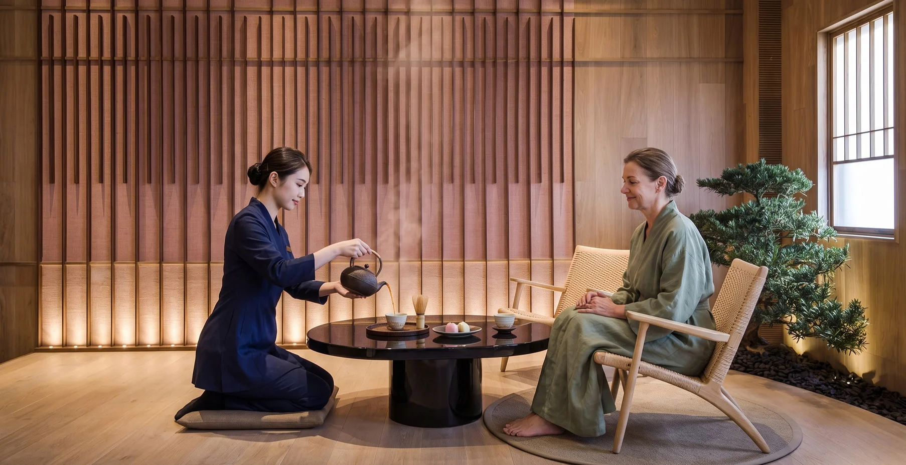
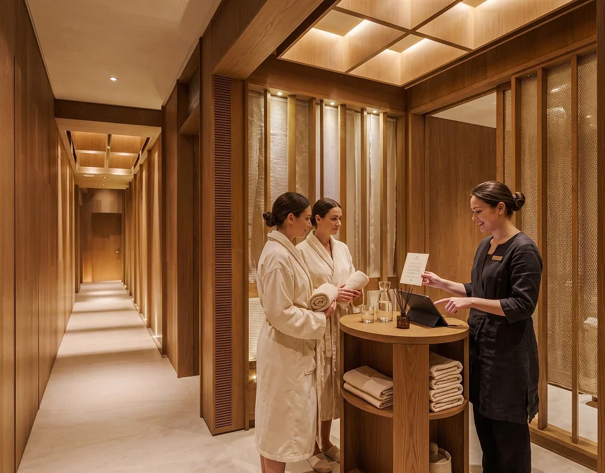
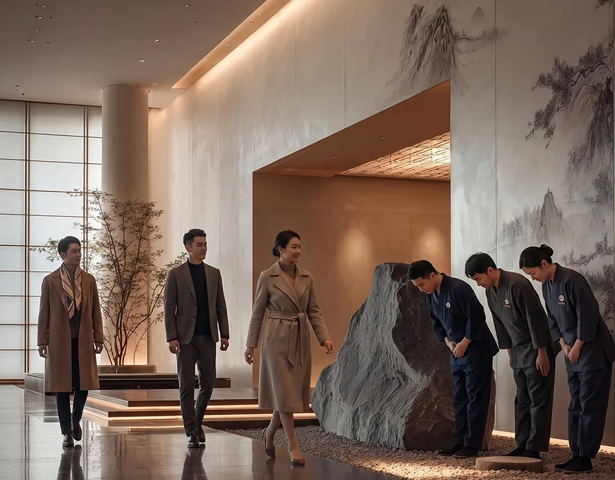
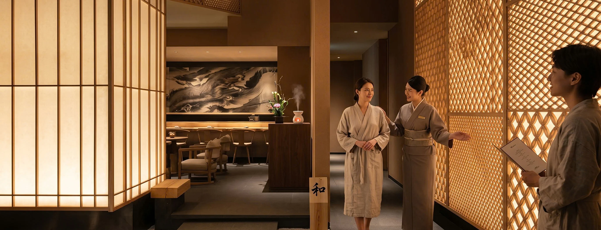
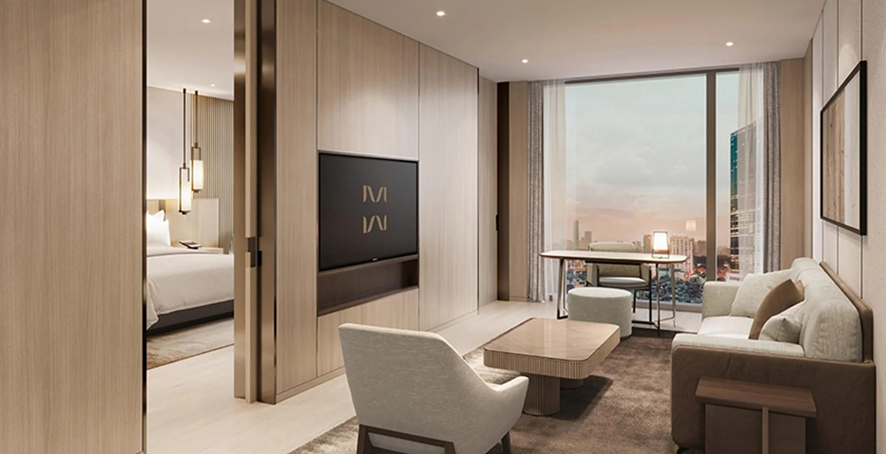

Giữa nhịp sống hiện đại luôn chuyển động, Sanchi Privé được hình thành với mong muốn tạo nên một khoảng lặng, nơi con người có thể tạm rời xa những bộn bề thường nhật để trở về với sự cân bằng bên trong.
Câu chuyện thương hiệu
Lấy cảm hứng từ tinh thần chăm sóc sức khỏe của Nhật Bản, Sanchi Privé tin rằng wellness không chỉ là thư giãn cơ thể, mà còn là hành trình kết nối lại giữa cơ thể, tâm trí và nguồn năng lượng bên trong.
Mỗi trải nghiệm tại Sanchi được xây dựng với sự tinh tế, chậm rãi và riêng tư, để việc chăm sóc bản thân trở thành một phần tự nhiên của cuộc sống.
Với Sanchi Privé, mỗi lần ghé thăm không đơn thuần là một liệu trình, mà là một hành trình trở về với chính mình. Bước qua cánh cửa Sanchi, nhịp sống dường như chậm lại trong thơm dịu nhẹ, âm thanh thư thái và sự chăm sóc tận tâm.


Triết lý Sanchi
Sanchi tạo nên một không gian để mỗi người có thể chậm lại, cảm nhận cơ thể và tìm về trạng thái cân bằng tự nhiên.

Phương pháp & định hướng
Mỗi liệu trình được định hướng nhằm hỗ trợ cơ thể giải tỏa căng thẳng, phục hồi và tái tạo nguồn năng lượng tự nhiên.
Phương pháp của Sanchi bắt đầu từ việc lắng nghe cơ thể — nhận diện trạng thái thể chất, mức độ căng thẳng và nhu cầu thư giãn của mỗi người để lựa chọn trải nghiệm phù hợp.
Các kỹ thuật massage, trị liệu và chăm sóc cơ thể được thực hiện với nhịp độ chậm rãi, chú trọng sự chính xác, riêng tư và cảm nhận của khách hàng.
Sanchi Privé xây dựng trải nghiệm wellness dựa trên sự kết hợp giữa tinh hoa chăm sóc sức khỏe phương Đông và những tiêu chuẩn wellness đương đại.
“Sanchi Privé - nơi sự cân bằng trở thành một cách sống.”

Mối liên hệ với Fuji
Tinh thần ấy được Sanchi chuyển hóa vào từng trải nghiệm bằng sự chăm rãi, tinh tế và chú trọng cảm nhận cá nhân. Từ không gian, hương thơm, âm thanh đến các kỹ thuật massage và trị liệu, mọi chi tiết đều hướng đến việc tạo ra một trạng thái thư giãn sâu, giúp cơ thể được phục hồi và tâm trí tìm lại sự tĩnh tại.
Sanchi không sao chép một mô hình wellness Nhật Bản, mà chắt lọc tinh thần cốt lõi để tạo nên cách chăm sóc phù hợp với nhịp sống hiện đại.

Sanchi Privé tại Shilla Hanoi
Tọa lạc trong không gian yên tĩnh và tinh tế tại The Shilla Hanoi, Sanchi Privé mang đến một điểm dừng wellness giữa lòng thành phố.
Từ những liệu trình massage thư giãn, chăm sóc cơ thể đến các phương pháp trị liệu chuyên sâu, mỗi trải nghiệm đều được kết hợp giữa tinh hoa chăm sóc sức khỏe phương Đông và tiêu chuẩn wellness đương đại, hướng đến việc giải tỏa căng thẳng, phục hồi thể chất và tái tạo năng lượng.
“Sanchi Privé - một khoảng lặng để cân bằng, phục hồi và tìm lại chính mình.”